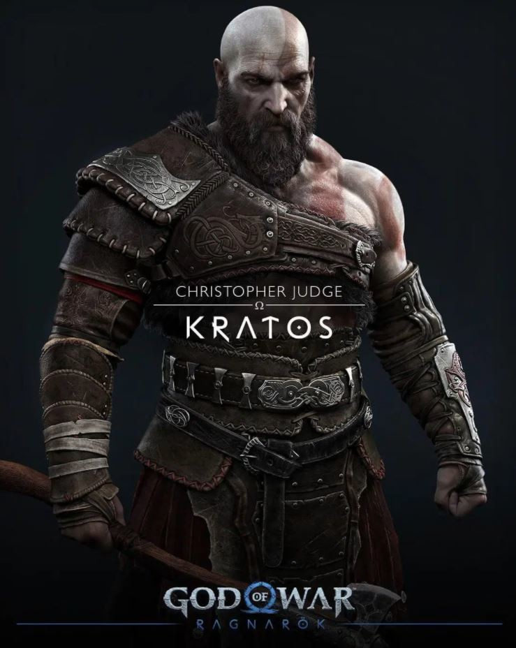
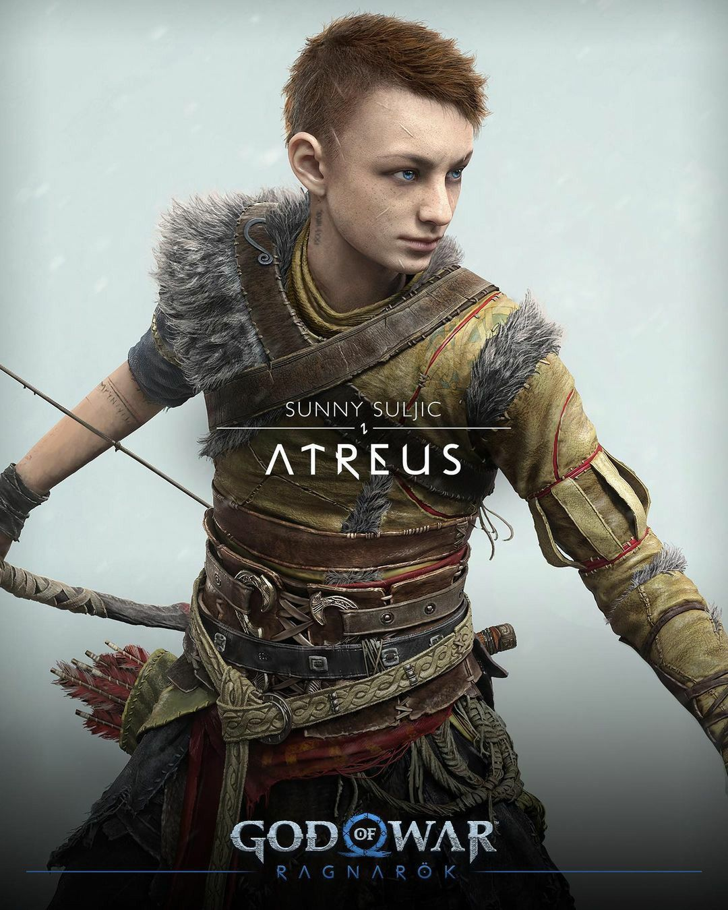
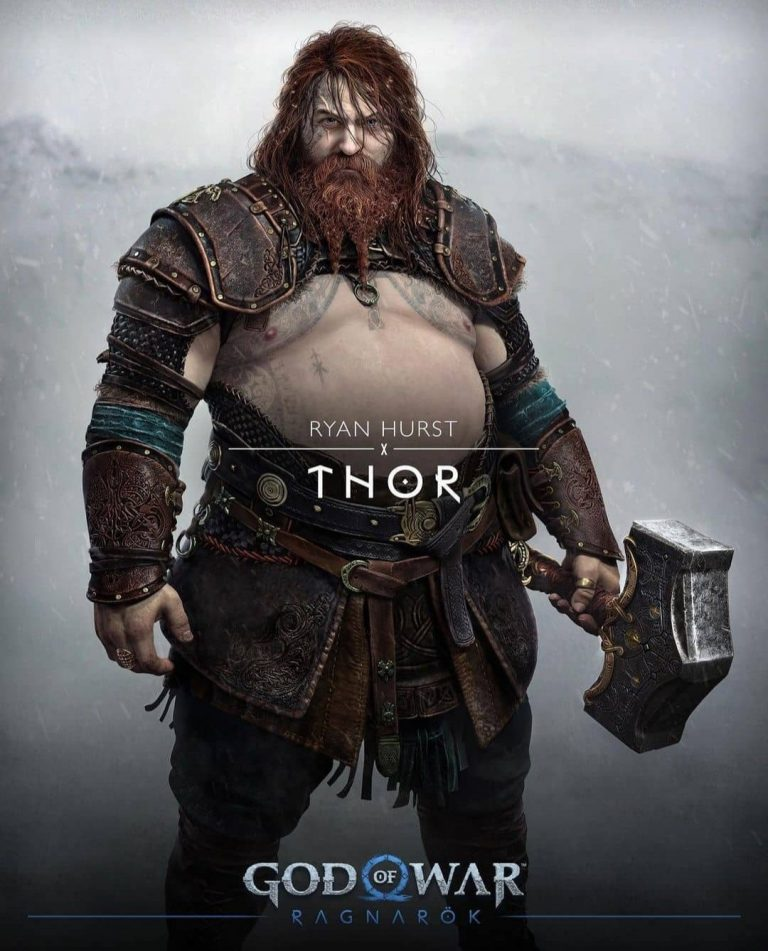
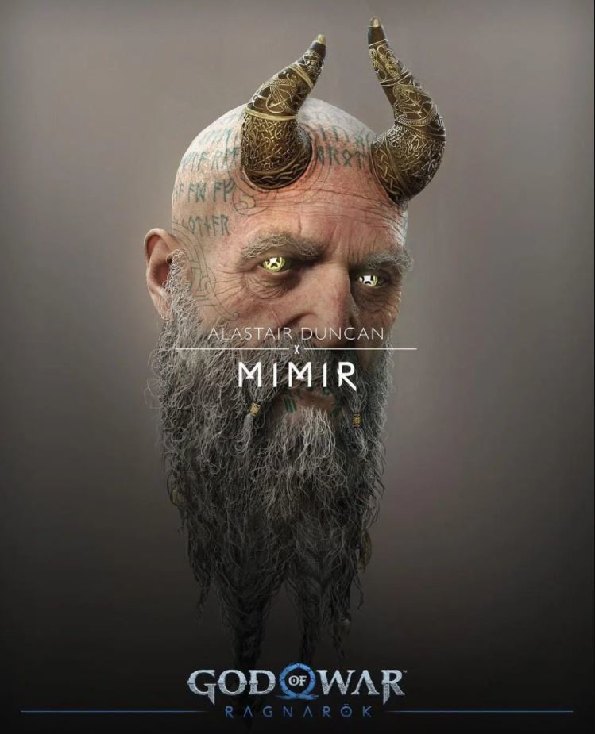
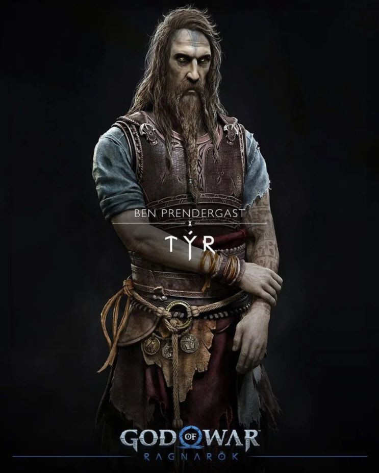
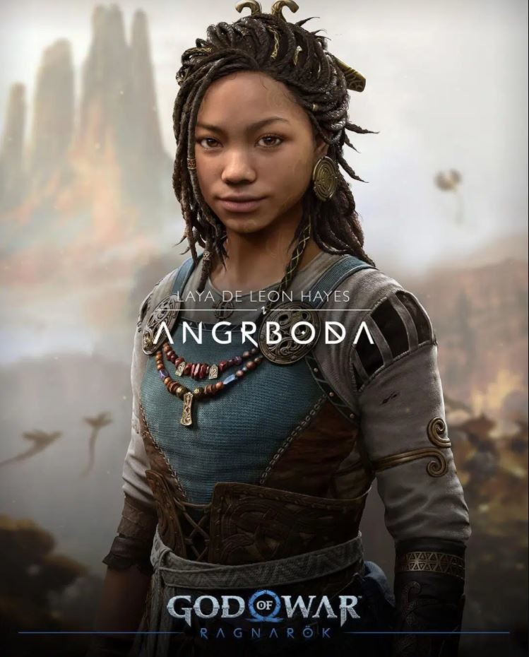
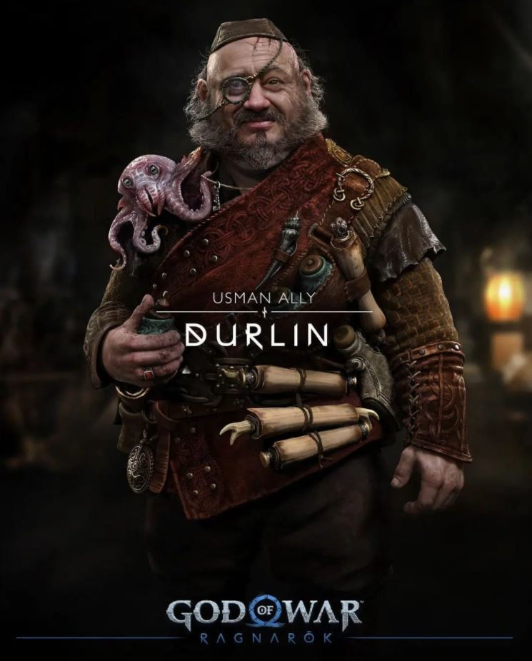
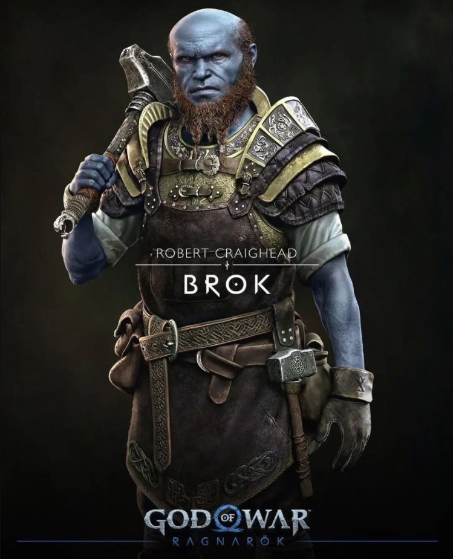
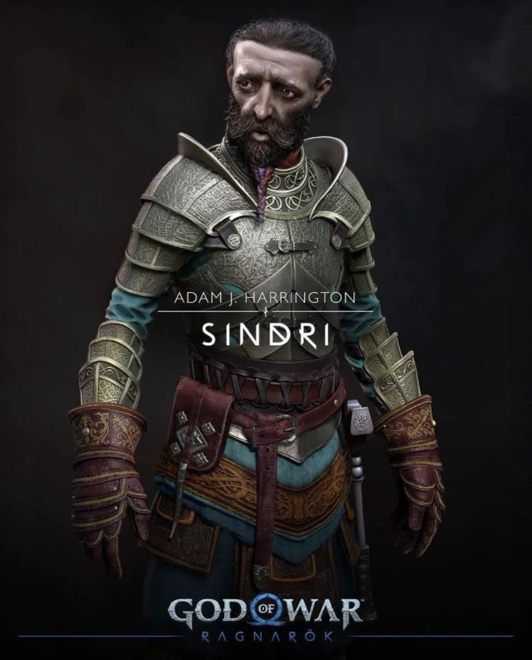

God of War wiki
Resumen
God of War es una serie de videojuegos hack and slash creada por SCE Santa Monica Studio y distribuida por Sony Computer Entertainment. Se basa en las aventuras de un semidiós espartano, Kratos, quien se enfrenta a diversos personajes de la mitología griega y nórdica, tanto héroes (Heracles, Teseo, Perseo, etc.); especies mitológicas (gorgonas, arpías, o minotauros); dioses griegos (Ares, Poseidón, Zeus, entre otros), titanes (como Cronos) y dioses primordiales (como Gaia). Aunque el guerrero espartano acostumbra enemistad con la mayoría de los dioses, recibe ayuda de muchos de ellos en algún momento de cada entrega, en especial de Atenea.

Cronologia
El orden de los juegos no está estipulado por su orden de salida al mercado, sino que cada uno cubre una parte de la historia independientemente de cuando salió a la venta.
| Año | Videojuego | Cronologia |
|---|---|---|
| 2013 | God of War: Ascension | #1 |
| 2008 | God of War: Chains of Olympus | #2 |
| 2005 | God Of War | #3 |
| 2010 | God of War: Ghost of Sparta | #4 |
| 2007 | God of War: Betrayal | #5 |
| 2007 | God of War II | #6 |
| 2010 | God of War III | #7 |
| 2018 | God of War | #8 |
| 2022 | God of War: Ragnarok | #9 |
Personajes Principales
Lo interesante de todo no es ver el diseño de estos personajes, que en el caso de los ya conocidos en la primera entrega se parece mucho, sino que se ven con todo lujo de detalle. A continuación podéis ver la galería al completo.
- 
- 
- 
- 
- 
- 
- 
- 
- 
Lanzamiento: God of war Ragnarök
9 de noviembre de 2022Sony ha anunciado la fecha de lanzamiento oficial de God of War Ragnarök, uno de los videojuegos más esperados de este 2022. Después de una larga espera de más de dos años, finalmente el título de Santa Monica Studio llegará a PlayStation 4 y PlayStation 5 el próximo 9 de noviembre.